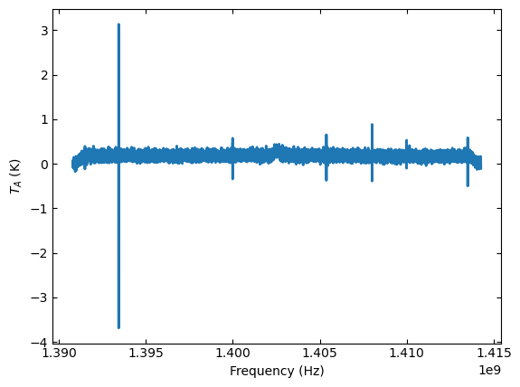
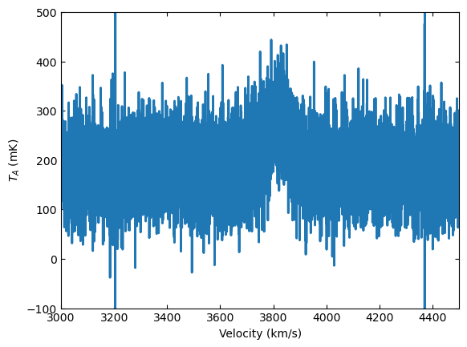
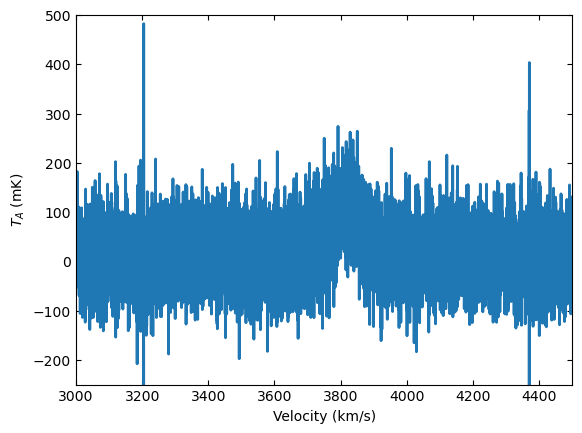

Position-switched Data Reduction
from dysh.fits.gbtfitsload import GBTFITSLoad
import astropy.units as u
f = '/data/gbt/examples/onoff-L/data/TGBT21A_501_11.raw.vegas.fits'
sdfits = GBTFITSLoad(f)
sdfits.info()
---------------------------------------------------------------------------
FileNotFoundError Traceback (most recent call last)
Cell In[2], line 2
1 f = '/data/gbt/examples/onoff-L/data/TGBT21A_501_11.raw.vegas.fits'
----> 2 sdfits = GBTFITSLoad(f)
3 sdfits.info()
File ~/Documents/Code/repos/github/dysh/src/dysh/fits/gbtfitsload.py:28, in GBTFITSLoad.__init__(self, filename, source, hdu, **kwargs)
27 def __init__(self, filename, source=None,hdu=None,**kwargs):
---> 28 SDFITSLoad.__init__(self,filename,source,hdu)#,fix=False)
30 self._compute_proc()
31 if kwargs.get("verbose",None):
File ~/Documents/Code/repos/github/dysh/src/dysh/fits/sdfitsload.py:57, in SDFITSLoad.__init__(self, filename, source, hdu, **kwargs)
55 self._binheader = []
56 self._data = []
---> 57 self._hdu = fits.open(filename)
58 self._primaryheader = self._hdu[0].header
59 self.load(hdu, **kwargs_opts)
File ~/Documents/Code/repos/github/dysh/dysh-env-3.8/lib/python3.8/site-packages/astropy/io/fits/hdu/hdulist.py:214, in fitsopen(name, mode, memmap, save_backup, cache, lazy_load_hdus, ignore_missing_simple, use_fsspec, fsspec_kwargs, **kwargs)
211 if not name:
212 raise ValueError(f"Empty filename: {name!r}")
--> 214 return HDUList.fromfile(
215 name,
216 mode,
217 memmap,
218 save_backup,
219 cache,
220 lazy_load_hdus,
221 ignore_missing_simple,
222 use_fsspec=use_fsspec,
223 fsspec_kwargs=fsspec_kwargs,
224 **kwargs,
225 )
File ~/Documents/Code/repos/github/dysh/dysh-env-3.8/lib/python3.8/site-packages/astropy/io/fits/hdu/hdulist.py:482, in HDUList.fromfile(cls, fileobj, mode, memmap, save_backup, cache, lazy_load_hdus, ignore_missing_simple, **kwargs)
462 @classmethod
463 def fromfile(
464 cls,
(...)
472 **kwargs,
473 ):
474 """
475 Creates an `HDUList` instance from a file-like object.
476
(...)
479 documentation for details of the parameters accepted by this method).
480 """
--> 482 return cls._readfrom(
483 fileobj=fileobj,
484 mode=mode,
485 memmap=memmap,
486 save_backup=save_backup,
487 cache=cache,
488 ignore_missing_simple=ignore_missing_simple,
489 lazy_load_hdus=lazy_load_hdus,
490 **kwargs,
491 )
File ~/Documents/Code/repos/github/dysh/dysh-env-3.8/lib/python3.8/site-packages/astropy/io/fits/hdu/hdulist.py:1170, in HDUList._readfrom(cls, fileobj, data, mode, memmap, cache, lazy_load_hdus, ignore_missing_simple, use_fsspec, fsspec_kwargs, **kwargs)
1167 if fileobj is not None:
1168 if not isinstance(fileobj, _File):
1169 # instantiate a FITS file object (ffo)
-> 1170 fileobj = _File(
1171 fileobj,
1172 mode=mode,
1173 memmap=memmap,
1174 cache=cache,
1175 use_fsspec=use_fsspec,
1176 fsspec_kwargs=fsspec_kwargs,
1177 )
1178 # The Astropy mode is determined by the _File initializer if the
1179 # supplied mode was None
1180 mode = fileobj.mode
File ~/Documents/Code/repos/github/dysh/dysh-env-3.8/lib/python3.8/site-packages/astropy/io/fits/file.py:218, in _File.__init__(self, fileobj, mode, memmap, overwrite, cache, use_fsspec, fsspec_kwargs)
216 self._open_fileobj(fileobj, mode, overwrite)
217 elif isinstance(fileobj, (str, bytes)):
--> 218 self._open_filename(fileobj, mode, overwrite)
219 else:
220 self._open_filelike(fileobj, mode, overwrite)
File ~/Documents/Code/repos/github/dysh/dysh-env-3.8/lib/python3.8/site-packages/astropy/io/fits/file.py:636, in _File._open_filename(self, filename, mode, overwrite)
633 ext = os.path.splitext(self.name)[1]
635 if not self._try_read_compressed(self.name, magic, mode, ext=ext):
--> 636 self._file = open(self.name, IO_FITS_MODES[mode])
637 self.close_on_error = True
639 # Make certain we're back at the beginning of the file
640 # BZ2File does not support seek when the file is open for writing, but
641 # when opening a file for write, bz2.BZ2File always truncates anyway.
FileNotFoundError: [Errno 2] No such file or directory: '/data/gbt/examples/onoff-L/data/TGBT21A_501_11.raw.vegas.fits'
sdfits.summary()
| SCAN | OBJECT | VELOCITY | PROC | PROCSEQN | RESTFREQ | DOPFREQ | # IF | # POL | # INT | # FEED | AZIMUTH | ELEVATIO | |
|---|---|---|---|---|---|---|---|---|---|---|---|---|---|
| 0 | 152.0 | NGC2415 | 3784.0 | OnOff | 1.0 | 1.617185 | 1.420406 | 5 | 2 | 151 | 1 | 286.218008 | 41.62843 |
| 1 | 153.0 | NGC2415 | 3784.0 | OnOff | 2.0 | 1.617185 | 1.420406 | 5 | 2 | 151 | 1 | 286.886521 | 41.118134 |
psscan = sdfits.getps(152, ifnum=0, plnum=0)
psscan.calibrate()
PSSCAN nrows = 302
print(f"T_sys = {psscan.tsys.mean():.2f}")
T_sys = 17.17
ta = psscan.timeaverage(weights='tsys')
ta.plot()

ta.plot(xaxis_unit="km/s",yaxis_unit="mK",ymin=-100,ymax=500,xmin=3000,xmax=4500)

kms = u.km/u.s
ta.baseline(degree=2,exclude=[3600*kms,4100*kms],remove=True)
EXCLUDING [Spectral Region, 1 sub-regions:
(1401242184.363393 Hz, 1403551474.1090915 Hz)
]
WARNING: The fit may be poorly conditioned
[astropy.modeling.fitting]
ta.plot(ymin=-250)

print(ta.baseline_model)
Model: Polynomial1D
Inputs: ('x',)
Outputs: ('y',)
Model set size: 1
Degree: 2
Parameters:
c0 c1 c2
K K / Hz K / Hz2
------------------- --------------------- ----------------------
0.16984671256725348 6.155580136474429e-29 2.2305011385559243e-56
ta.savefig("baselined_removed.png")